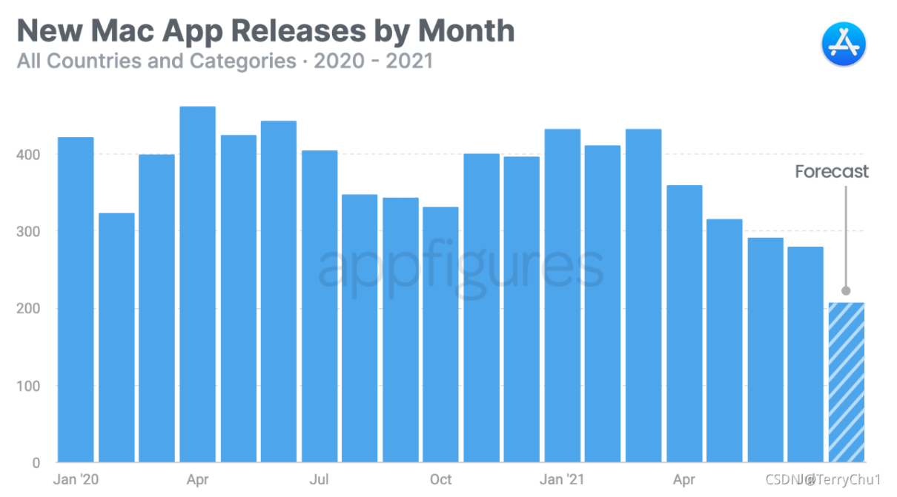

The MAC app store appeared later than the IOS app store. However, the MAC app store has existed for a long time since it was launched in 2010. IOS app store has achieved great success, but the latest survey shows that developers' interest in MAC app store is weakening.
Findings
According to appfigures, an application analysis company, the number of new applications on the MAC app store has been declining since the beginning of this year“ In 2020, developers released an average of 392 new applications to the MAC app store every month. By 2021, the average number of new Mac apps has dropped to 343. "
In January 2021, more than 400 new MacOS applications were released on the MAC app store. In June this year, this number fell to less than 300. It is expected that about 200 new applications will be released in the MAC app store in August. Compared with previous years, developers are obviously no longer willing to sell apps through the MAC app store.
Reason speculation
The main reason for this situation is not clear. Apple has not disclosed the specific situation, but the reason can be speculated.
Unlike the iPhone and iPad, the MAC allows users to install applications from outside the app store.

As the appfigures survey points out, the MAC app store is "not the only choice" for some users because they can download applications directly from other developers' websites. Apple also hopes that developers can release their IOS applications on the MAC app store of M1 Mac, but only a few applications can be used on Mac OS.
Some developers were dissatisfied with the MAC app store because it failed to provide simple and flexible trial or discount services, not to mention that Apple needed to draw a 30% commission. In contrast, it seems easier to publish MAC applications in other ways.
Meanwhile, Apple has been trying to make the app store the only way to install apps on IOS. Recently, Apple's move has been frustrated in South Korea. The new antitrust law will force apple and Google to allow developers to use third-party payment platforms without paying commissions to these companies. If the anti-monopoly law is implemented by more and more countries, we don't know what will happen to the Apple App store.
What do you think?
For the results of this data survey, many netizens said they were expected.
Some netizens said that the contradiction between developers and Apple App store has existed for a long time. "I'm waiting to see how Apple will solve this problem with developers." It was suggested that Microsoft had shown how to create an app store on the open platform of windows 11, hoping that Apple would pay attention.
Some netizens pointed out that not all the applications running on their MAC come from the Apple App store, "but my Mac did not explode and was not invaded by viruses as apple said. Apple would not lie openly in order to protect its monopoly, right?"
What do you think?